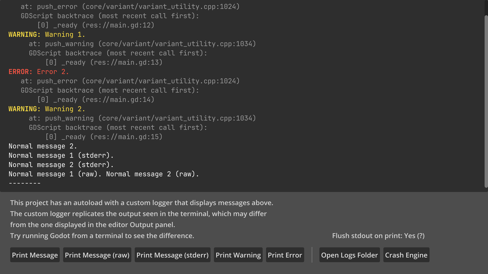
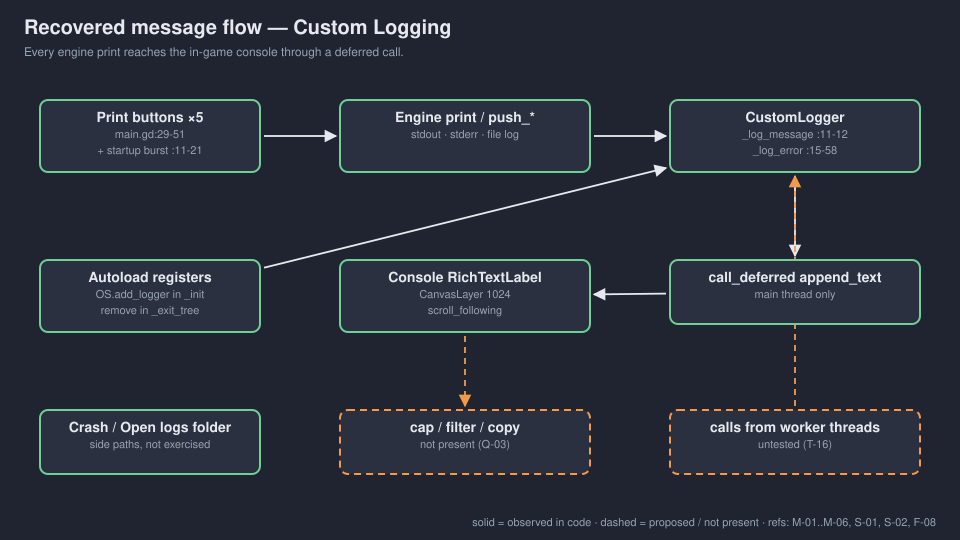
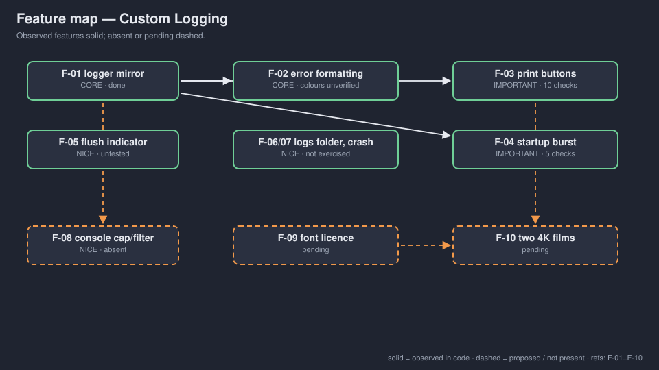

A local adaptation of Godot's misc/custom_logging. A tech demo, not a game: an autoloaded logger and seven buttons.
OBSERVED in code INFERRED implied MISSING undecided
No gate signed. No human review. → GDD.md

INFERRED upstream screenshot (godot/README.md:19), not a Walker capture.

| Type | Prefix colour | Trace indent |
|---|---|---|
| ERROR | #f54 | 6 |
| WARNING | #fd4 | 8 |
| SCRIPT ERROR | #f4f | 13 |
| SHADER ERROR | #4bf | 13 |
OBSERVED custom_logger_ui.gd:30-42. Rendered colours unverified.
Initial console contents, and five buttons pressed with real mouse events: counter up, message on console. OBSERVED input-20260924.log
Not exercised: Crash Engine, Open Logs Folder, calls from threads, file flush, visual colours.

That is an inference, not a decision. If Walker adopts it, test it from a worker thread first. Fix the font licence before anything is published.